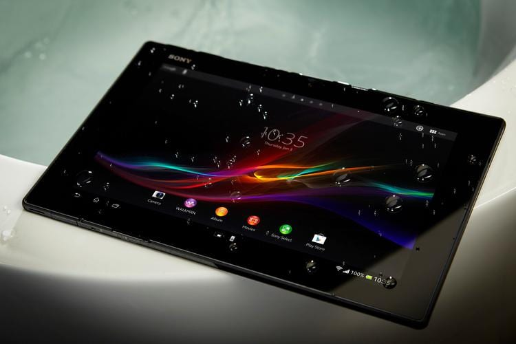

索尼 Xperia Tablet Z

6.9 毫米防水机身，把索尼式浪漫塞进 10 英寸平板。
客观评测
Xperia Tablet Z 把 10.1 英寸 1920×1200 屏幕塞进仅约 6.9 毫米厚、495 克重的机身，2013 年问鼎最薄平板。骁龙 S4 Pro 四核 1.5GHz 配 2GB 内存，后置 810 万像素 Exmor RS 摄像头，并支持 IP55/IP57 防水防尘，是少数能带进浴室的平板。实测屏幕亮度与可视角度出色，唯独电池约 6000mAh，重度使用撑不满一天。
主观点评
纯平的全平衡设计语言加上四边近似等宽的窄边框，颜值放在今天依然能打。防水属性让它在泡澡刷剧这个细分场景里几乎没有对手，握上去薄得像一块玻璃，边框的实体按键反馈清脆，也延续了索尼一贯的偏执与浪漫。可惜系统本地化一般、价格偏高，向来是叫好难叫座。
优点与不足
- 6.9 毫米机身当年问鼎最薄
- 支持防水，可带进浴室使用
- Exmor RS 摄像头成像在平板中出众
- 电池容量偏小，重度使用撑不满一天
- 系统更新支持周期短
- 售价偏高，性价比一般
参数规格
| 屏幕 | 10.1 英寸 IPS 触摸屏 |
|---|---|
| 分辨率 | 1920×1200 |
| 处理器 | 高通骁龙 S4 Pro APQ8064 四核 1.5GHz |
| 内存 | 2GB |
| 存储 | 16GB / 32GB，支持 microSD |
| 系统 | Android 4.1 |
| 摄像头 | 后置 810 万像素（Exmor RS） |
| 防护 | IP55 / IP57 防水防尘 |
| 重量 | 约 495 克 |
| 厚度 | 约 6.9 毫米 |
| 电池 | 约 6000mAh |
| 特色 | NFC、红外遥控，可控制家电 |